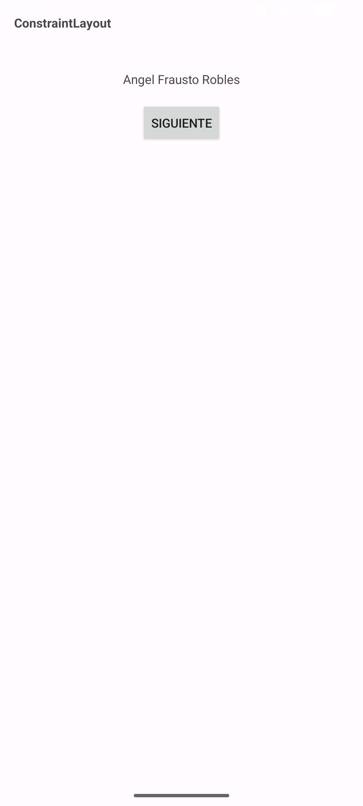
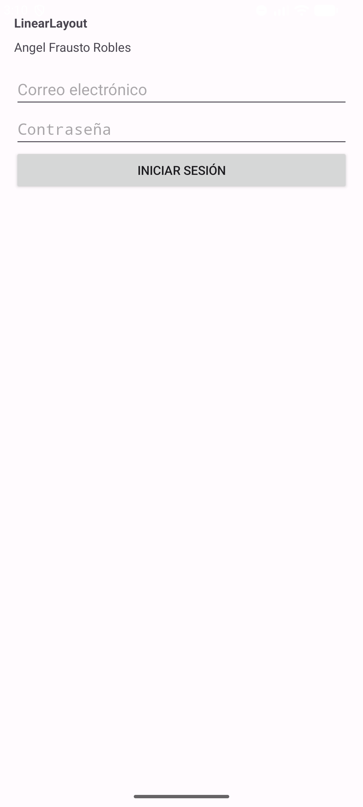
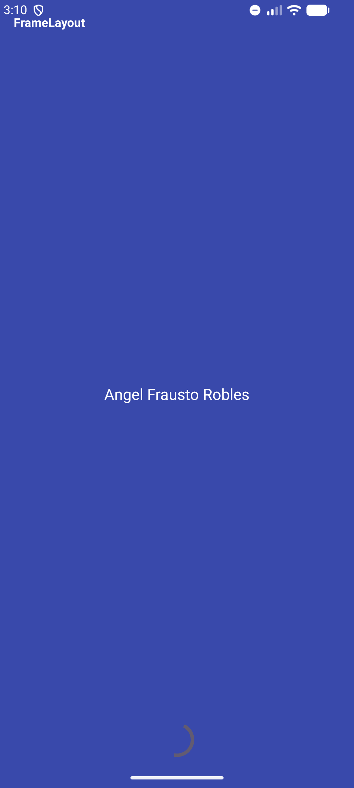
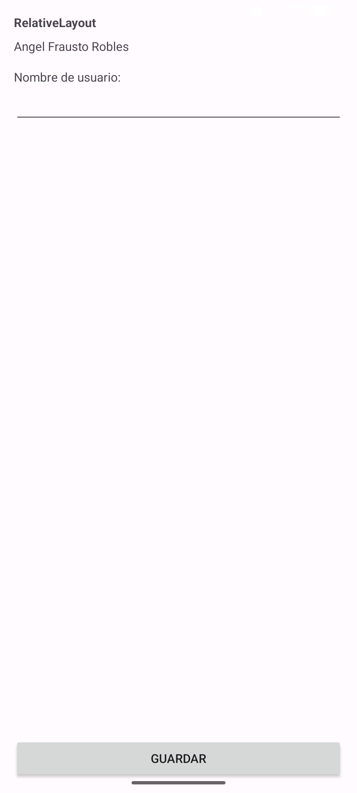
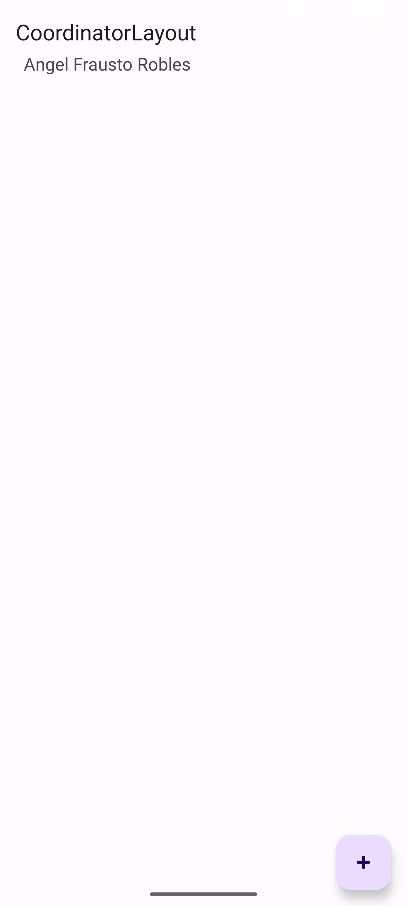
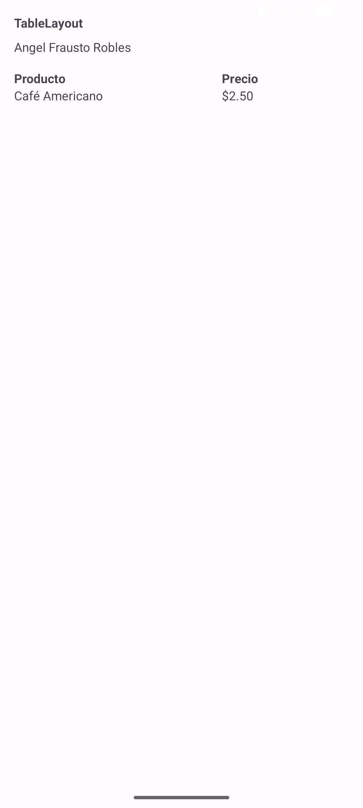
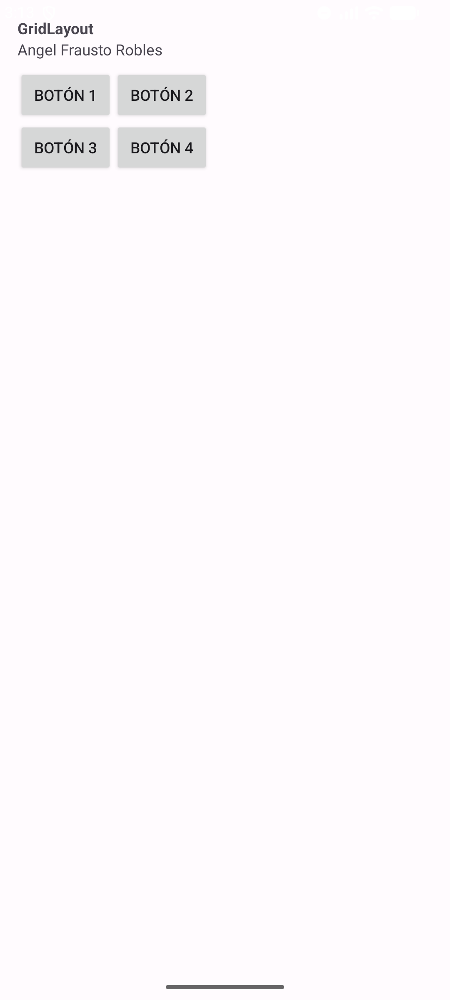
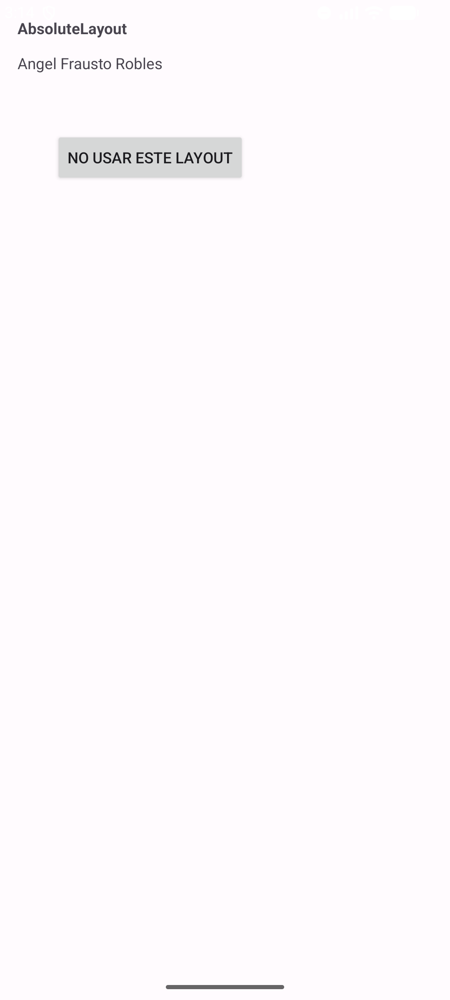

| Asignatura: | Desarrollo de Aplicaciones Móviles Nativas |
| Práctica: | Práctica 5: Plantillas de layout |
| Alumno: | Angel Frausto Robles |
| Grupo: | 7CM4 |
| Fecha: | 12 de septiembre de 2026 |
Esta práctica pide comparar los ocho tipos de layout de Android que trae el documento del profesor: ConstraintLayout, LinearLayout, FrameLayout, RelativeLayout, CoordinatorLayout, TableLayout, GridLayout y AbsoluteLayout. Cada uno organiza a sus elementos hijos de una forma distinta, y entender esas diferencias es lo que permite elegir el layout correcto según la pantalla que se necesite construir.
Objetivos:
El proyecto se creó con la plantilla Empty Views Activity en Java. La aplicación tiene una pantalla
principal (MainActivity) con un botón por cada layout, y cada botón abre
una actividad distinta que muestra ese layout en particular. Todas las actividades extienden
android.app.Activity directamente. Seis de los ocho layouts son parte del
SDK clásico de Android (LinearLayout, FrameLayout, RelativeLayout, TableLayout, GridLayout,
AbsoluteLayout); los otros dos, ConstraintLayout y CoordinatorLayout, son parte de AndroidX y se
agregaron como dependencias del proyecto porque son justamente el tema de esta práctica.
Es el estándar moderno para pantallas complejas: en lugar de anidar layouts unos dentro de otros,
cada elemento se ancla a otros elementos o a los bordes del contenedor mediante restricciones
(app:layout_constraintTop_toTopOf, etc.).
<androidx.constraintlayout.widget.ConstraintLayout ...>
<TextView android:id="@+id/text_titulo"
app:layout_constraintTop_toTopOf="parent"
app:layout_constraintStart_toStartOf="parent"
app:layout_constraintEnd_toEndOf="parent" />
<Button
app:layout_constraintTop_toBottomOf="@id/text_titulo" />
</androidx.constraintlayout.widget.ConstraintLayout>

Alinea a sus hijos uno detrás de otro, en fila o en columna según
android:orientation. Es el layout más simple y el más usado para
formularios sencillos, como el de inicio de sesión de este ejemplo.
<LinearLayout android:orientation="vertical" ...>
<EditText android:hint="Correo electrónico" />
<EditText android:hint="Contraseña" android:inputType="textPassword" />
<Button android:text="Iniciar Sesión" />
</LinearLayout>

Apila a sus hijos unos sobre otros, en el orden en que aparecen en el XML. Sirve para superponer contenido, como un indicador de carga sobre una imagen de fondo; en esta pantalla se ve el fondo de color, el nombre del alumno al centro y una barra de progreso hasta abajo, los tres al mismo tiempo.
<FrameLayout ...>
<View android:background="#3949AB" />
<TextView android:layout_gravity="center" android:text="@string/xautor" />
<ProgressBar android:layout_gravity="bottom|center_horizontal" />
</FrameLayout>

Ubica a cada hijo en relación con otro hijo o con los bordes del contenedor, usando atributos como
layout_below o layout_alignParentBottom.
Hoy en día ConstraintLayout cubre los mismos casos con más control, así que RelativeLayout ya casi
no se usa en proyectos nuevos.
<RelativeLayout ...>
<TextView android:id="@+id/etiqueta" android:text="Nombre de usuario:" />
<EditText android:layout_below="@id/etiqueta" />
<Button android:layout_alignParentBottom="true" android:text="Guardar" />
</RelativeLayout>

Es un contenedor pensado para coordinar el movimiento de varias vistas a la vez, como cuando una
barra superior se colapsa al hacer scroll. Aquí se usa para colocar una
MaterialToolbar arriba y un botón flotante abajo a la derecha.
Al probar esta pantalla, el nombre del alumno apareció encimado con el título de la barra superior:
CoordinatorLayout no acomoda a sus hijos en orden como LinearLayout, así que un TextView sin más
se queda en la esquina superior izquierda, debajo de la barra. Se resolvió con
app:layout_anchor, que ancla el TextView a la parte de abajo de la
barra en vez de calcularle un margen fijo.
<androidx.coordinatorlayout.widget.CoordinatorLayout ...>
<com.google.android.material.appbar.AppBarLayout android:id="@+id/xappbar">
<com.google.android.material.appbar.MaterialToolbar app:title="CoordinatorLayout" />
</com.google.android.material.appbar.AppBarLayout>
<TextView android:text="@string/xautor"
app:layout_anchor="@id/xappbar"
app:layout_anchorGravity="bottom|start" />
<com.google.android.material.floatingactionbutton.FloatingActionButton
android:layout_gravity="bottom|end" />
</androidx.coordinatorlayout.widget.CoordinatorLayout>

Organiza el contenido en filas (TableRow) y columnas, como una hoja de
cálculo. El atributo stretchColumns hace que las columnas indicadas se
repartan el espacio disponible.
<TableLayout android:stretchColumns="0,1">
<TableRow>
<TextView android:text="Producto" />
<TextView android:text="Precio" />
</TableRow>
<TableRow>
<TextView android:text="Café Americano" />
<TextView android:text="$2.50" />
</TableRow>
</TableLayout>

Distribuye a sus hijos en una cuadrícula de columnas y filas fijas
(columnCount, rowCount). A diferencia de
TableLayout, aquí cualquier vista puede ocupar más de una columna con
layout_columnSpan, que es lo que se usó para que el título y el nombre
del alumno cruzaran las dos columnas de botones.
<GridLayout android:columnCount="2" android:rowCount="3">
<TextView android:layout_columnSpan="2" android:text="@string/xautor" />
<Button android:text="Botón 1" />
<Button android:text="Botón 2" />
</GridLayout>

Coloca a sus hijos en coordenadas x, y exactas, en píxeles independientes de densidad. Está descontinuado desde hace más de diez años porque una posición fija se rompe en cuanto la pantalla cambia de tamaño u orientación, pero el propio framework de Android lo sigue incluyendo.
<AbsoluteLayout ...>
<TextView android:text="@string/xautor" android:layout_x="16dp" android:layout_y="48dp" />
<Button android:text="No usar este Layout" android:layout_x="50dp" android:layout_y="120dp" />
</AbsoluteLayout>

Ver los ocho layouts uno junto al otro deja más claro por qué ConstraintLayout terminó reemplazando a
RelativeLayout: hace lo mismo (posicionar elementos unos respecto a otros) pero sin el anidamiento extra
que LinearLayout necesitaría para el mismo resultado, y sin depender de una jerarquía tan rígida como la
de TableLayout o GridLayout. El caso que más tiempo me tomó entender fue CoordinatorLayout, porque a
diferencia de los demás no acomoda a sus hijos automáticamente: si no se ancla un elemento a otro con
layout_anchor, simplemente se queda flotando en la esquina y se puede
encimar con la barra superior, que es justo lo que pasó la primera vez que probé esta pantalla.
AbsoluteLayout, en cambio, deja ver por qué está descontinuado con solo mirarlo: basta con que el
androide de la pantalla sea un poco más chico o más grande para que el botón quede fuera de lugar.
https://developer.android.com/develop/ui/views/layout/declaring-layouthttps://developer.android.com/develop/ui/views/layout/constraint-layouthttps://developer.android.com/reference/androidx/coordinatorlayout/widget/CoordinatorLayout